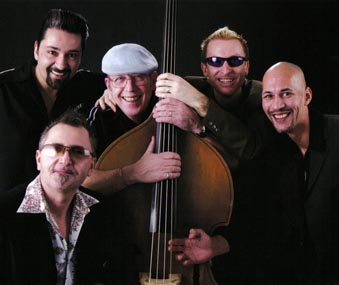

" Paul Lamb & The King Snakes – просто великолепная группа". (Blues in the South)
"Они играют блюз, как Марлон Брандо водил свой мотоцикл…. небрежно, самоуверенно, хладнокровно и агрессивно " (Blues & Rhythm)
"...звучат как американские и черные....... белые, насколько могут быть британцы". (Melody Maker)
"... и конечно вам не придется грустить в конце вечера." (South China Post, Hong Kong)
"... могут ли британцы играть блюз?.....если это Paul Lamb and the King Snakes, ответ – твердое да." (Jakarta - What's On)

Мы не будем здесь рассказывать о биографиях музыкантов – все это вы уже слышали много раз. Давайте просто поговорим о Paul Lamb & The King Snakes , лучшей блюзовой группе Британии. Такой она стала не вдруг. Этому предшествовали годы упорного труда и стараний – именно так, хоть эти понятия мало значат в наше время легкого успеха. Пол и его группа работали, ошибались, применяли на практике то, чему научились, - результаты представляются на суд публике, которая валом валит на их выступления. И она гарантированно получает настоящую хорошую музыку, сыгранную музыкантами, которые поддерживают и вдохновляют друг друга. Вот вам и секрет успеха.
Сейчас в составе группы the King Snakes играют как молодые, так и опытные музыканты. Пол Лэмб провел последние тридцать с чем-то лет играя в клубах родного Северо-Запада, а потом в Лондоне на концертах и фестивалях, создавая уникальный сплав опыта своих предшественников и собственного таланта. Он представлял Великобританию на Всемирных конкурсах губных гармонистов, работал со своим учителем Сонни Терри ( Sonny Terry ), играл практически со всеми блюзовыми исполнителями, заезжавшими на английские берега.
Первая группа Пола Лэмба, Smokestack Lightning , возникла в 1979 году. Потом она превратилась в Barfly , а затем в the Blues Burglars . В 1986 году The Burglars записали свой дебютный альбом на лейбле Red Lightnin '. Уже в Лондоне появилась следующая инкарнация группы, the Paul Lamb Blues Band, в которой на басу играл Род Демик, на ударных какое-то время Джим Маккарти (Jim McCarty) (бывший участник Yardbirds ), а на соло-гитаре – давнишний товарищ Лэмба Джон Уайтхил (John Whitehill). Однако альбом на Blue Horizon (( CDBLUH 011) они записали уже как Paul Lamb and the King Snakes . Именно в этом году преданность Пола Лэмба своему делу начала приносить, так сказать, материальные плоды – он был признан Музыкантом года по версии British Blues Connection ( BBC ) и удостаивался этого титула шесть лет подряд. Его группа была названа в Великобритании Блюзовой группой года, как и в последующие два года, а потом в 1997 и 1998 годах. Альбом, записанный на Blue Horizon, стал Альбомом года в 1991 году. Потом эта награда присуждалась альбомам группы еще не раз.
Shifting Into Gear , альбом, записанный в Дании, вышел в 1992 году в Бельгии на лейбле Tight & Juicy. Потом его выпустили и в Великобритании, в рамках договора the King Snakes с Indigo Records . После этого для группы начался период успеха – за свои выступления Paul Lamb and the King Snakes стали регулярно получать награды от BBC . Их альбомы тоже не прошли незамеченными: Fine Condition (IGOCD 2019) был признан альбомом года в 1996 году, She ' s a Killer (IGOXCD 503) – в 1997, а Take Your Time and Get It Right - в 2001. В этот период еще раз вышел Shifting Into Gear (IGOXCD 504), John Henry Jumps In (IGOXCD 512), The Blue Album ( IGOXCD 521) и Whoopin', переиздание Breaking In, (IGOXCD 522). Еще две пластинки были выпущены лейблом Sanctuary - Live at The 100 Club 14 th May 2002 (IGOFCD 2517) и Harmonica Man (CMEDD 701), антология всего, что было сделано за предыдущие годы.
Богатый исполнительский опыт у вокалиста и ритм-гитариста Чеда Стрентца. Он начинал как любитель кантри-рока и вдохновлялся примерами Gene Vincent , Johnny Burnette и Mac Curtis, а также Элвиса и Литл Ричарда. С пятнадцати лет он играл в различных группах, например, Skat Katz, Cat Talk и Shout Sister Shout , участие в которых включило в круг его кумиров Бо Дидли и Джуниора Паркера, а также Sam Cooke, Jackie Wilson and Wilson Pickett . Он вошел в состав the King Snakes в 1991 году, внес значительный вклад в альбомы, получившие награды. Шумное признание, которое группа получала в Великобритании и других странах Европы, досталось и на его долю. Взяв годичный отпуск в 1999 году, он с Pete Farugia организовал Breakout Blues , а потом записывался и гастролировал с Big Town Playboys. Сейчас он с новыми силами играет с King Snakes.
Но если уж говорить об опыте, как не сказать о басисте и вокалисте Роде Демике. Свою первую группу, the Vibros , он организовал в 11 лет, а потом стал играть в Wheels , единственной в Белфасте ритм-н-блюзовой группой, которая могла конкурировать с Van Morrison и Them . Группа перебралась в Лондон и записала три сингла на Columbia . В 1967 году она распалась. Некоторое время Демик и его соло-гитарист Херби Армстрон выступали под именем the James Brothers . Подобно многим музыкантам того времени, увидев и услышав Эрика Клэптона, Питера Грина и Джимми Хендрикса, Демик переключился с гитары на бас, что в конечном счете пошло ему на пользу. В последующие годы он был основным музыкантом Demick Armstrong и участником Bees Make Honey , Meal Ticket , Yellow Dog , the David Essex Band и the Strawbs. Он познакомился с Полом и Джонни Уайтхилом вскоре после их переезда в Лондон и вошел в состав the King Snakes четыре года назад.
Когда тебе за тридцать, а тебя называют молодым – это комплимент. И Сонни Белоу, и Рауль де Педро Маринеро многое успели за те годы, что они занимаются музыкой. Отец Сонни Фрэнк Назарет был ударником и администратором the Sunflower Boogie Band , поэтому мальчик вырос в окружении музыкантов, одним из них был Johnny Mars.
С подачи Джонни Сонни стал участвовать в джем-сейшнах и репетициях. Ему было слегка за двадцать, когда они с другом Джоном О' Брайеном организовали группу Midnight Willie ; потом он играл в the Guzzle and Root Blues Band и Hoodoo Moon , а 1998 году он стал одним из King Snakes . Cоло-гитарист Рауль тоже был одним из участников Midnight Willie . Он начал играть в 18 лет и через семь лет решил покинуть родную Испанию, переехать в Англию и играть в блюзовой группе. Он сменил несколько групп, а с 2003 года он - самый “новый” участник the King Snakes .
Жизнь не стоит на месте. Lamb and the King Snakes открывают новую главу своей истории. Перед ними встанут новые задачи, а новые достижения обеспечат им еще более широкую аудиторию людей, которые знают цену настоящей музыке. В мире, где блюз вот-вот станет просто одной из приправ в общем супе, Paul Lamb and the King Snakes остаются бастионом настоящего блюза.
Пол Лэмб
Лучший исполнитель на губной гармонике – 1990, 1991, 1992, 1993, 1994, 1995, 1996
Джонни Уайтхил
-
Лучший блюзовый гитарист – 1997, 1998, 1999
Эрл Грин
Вокалист года – 1996, 1997, 2001
PAUL LAMB & THE KING SNAKES
Блюзовая группа года - 1991, 1992, 1993, 1997, 1998
PAUL LAMB & THE KING SNAKES
Блюзовый альбом года - 1991
"FINE CONDITION"
Блюзовый альбом года - 1996
" SHE'S A KILLER "
Блюзовый альбом года - 1997
"TAKE YOUR TIME AND GET IT RIGHT"
Блюзовый альбом года - 2001
Notodden Blues Festival (Норвегия ), Bragdoya Blues Festival (Норвегия), BRBF Peer (Бельгия) , Bluesfestival Gaildorf (Германия), Cognac Festival (Франция), Summermusic Festival Moscow (Россия), Rawa Blues Katowice (Польша), Viana do Castello (Португалия), Cazorla Blues Festival (Испания), Getxo Blues & Jazz (Страна Басков), Great British R&B Festival (Великобритания), Rauma Blues Festival (Финляндия), Unna Bluesfestival (Германия), Breminale Festival (Германия), Athens Bluesfestival (Греция)
В начале декабря 2005 пройдут третьи российские гастроли лучшей британской блюзовой группы Paul Lamb & The King Snakes. За четыре дня они сыграют в Москве, Рязани и Владимире. Московские концерты пройдут в рамках 8-го Московского Международного Фестиваля Губной Гармоники.
{kind=link}